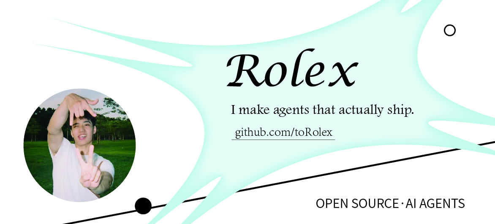

Featured Work
我为以下开源项目提交过贡献。
openclaw/openclaw
— The AI that really does things. Any OS. Any Platform. 🦞
NousResearch/hermes-agent
— The agent that grows with you
nicobailon/pi-subagents
— Pi extension for async subagent delegation
coulsontl/ai-toolbox
— Personal AI Toolbox